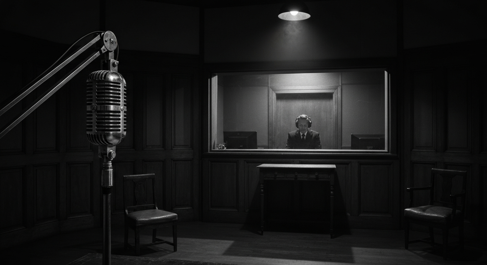
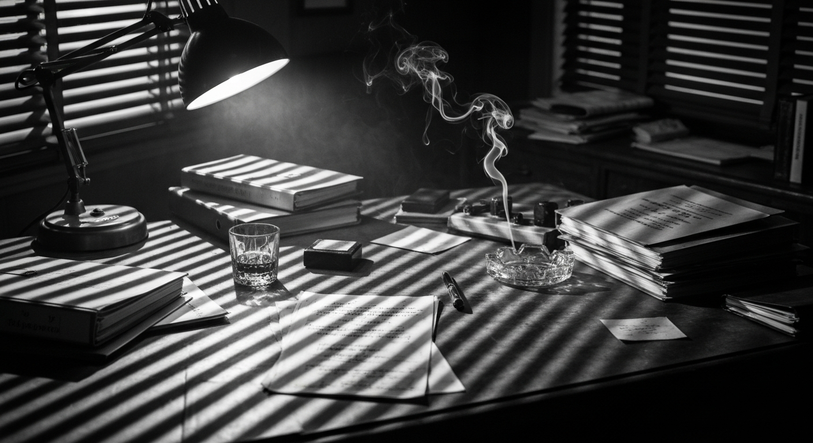
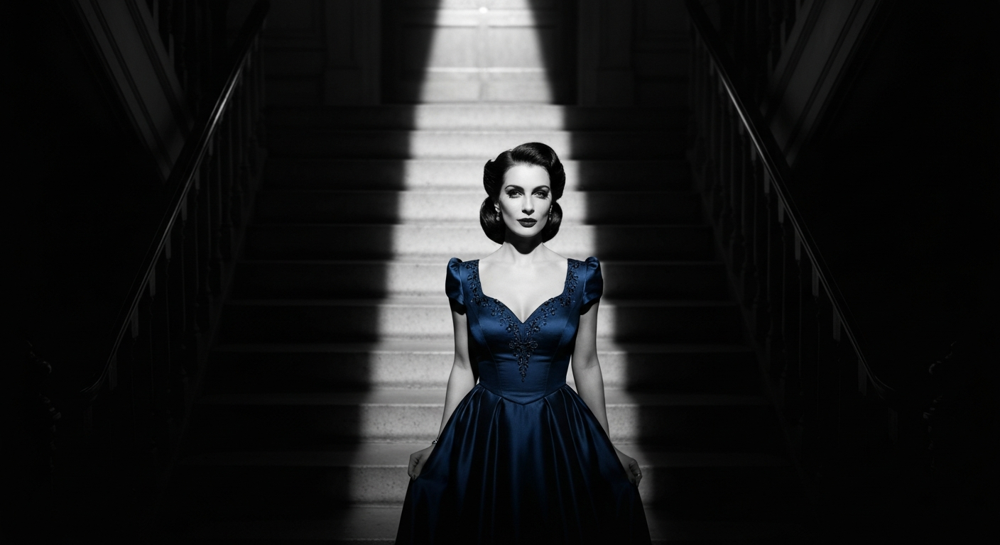
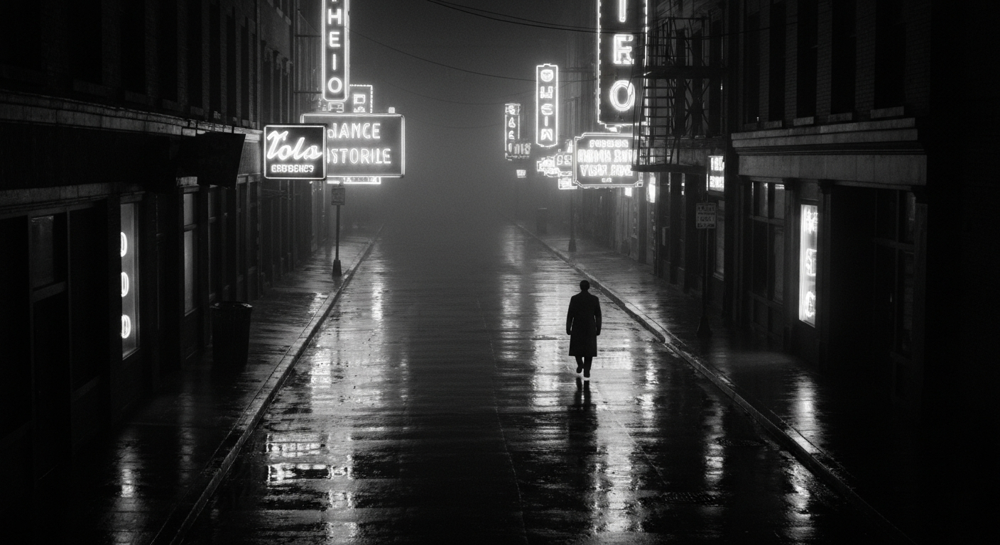
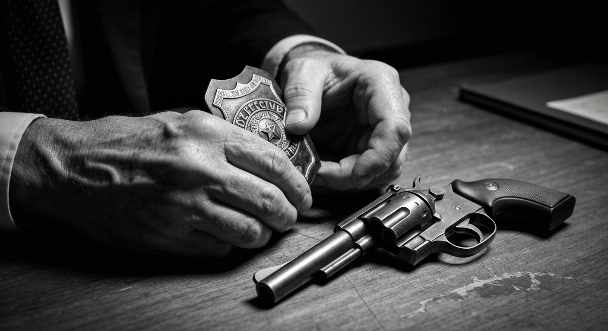

Five legendary programs from the golden age of radio, brought back from the archives for a new generation of listeners.

"Sam Spade, the hard-boiled private eye from San Francisco…"
Based on the iconic character created by Dashiell Hammett, The Adventures of Sam Spade followed the wisecracking San Francisco private detective through a fog-shrouded world of deception, danger, and dark comedy.
Starring Howard Duff (and later Steve Dunne) in the title role, the show ran on both NBC and CBS. Each episode was framed as a report dictated to Spade's loyal secretary Effie Perrine, blending hardboiled detective fiction with sharp humor. The series captured the spirit of Hammett's tough, cynical, but ultimately principled gumshoe — a man who trusted no one and always got his answers, one way or another.
San Francisco itself became a character in the show: foggy wharves, seedy hotels, and smoky offices set the stage for some of radio's finest noir storytelling.

"Who knows what evil lurks in the hearts of men? The Shadow knows!"
One of the most recognized characters in American popular culture, The Shadow began as a mysterious narrator for a detective anthology before evolving into a crime-fighting hero with the power to "cloud men's minds" and become invisible.
Lamont Cranston, wealthy young man-about-town, learned the hypnotic power of invisibility during travels in the Orient. As The Shadow, he and his "friend and companion, the lovely Margo Lane" battled criminals, mad scientists, and supernatural threats across the airwaves for nearly two decades.
The show's atmospheric opening — with its eerie laugh and famous catchphrase — became one of the most iconic moments in broadcasting history. Orson Welles was among the early actors to voice the character, setting a standard for dramatic radio that endures to this day.

"Elementary, my dear Watson."
Sir Arthur Conan Doyle's immortal detective made a natural transition to radio, where the fog-bound streets of Victorian London and the intellectual duels between Holmes and his adversaries came vividly to life through sound alone.
The most celebrated radio incarnation starred Basil Rathbone as Holmes and Nigel Bruce as Dr. Watson — the same pairing that defined the characters in the Universal film series. Their chemistry was magnetic: Rathbone's precise, imperious Holmes played against Bruce's warmly bumbling Watson.
From the gas-lit sitting room at 221B Baker Street to the moors of Dartmoor and the criminal underworld of London, these radio adaptations brought Doyle's stories to millions of listeners and cemented Sherlock Holmes as a permanent fixture of popular imagination.

"The man with the action-packed expense account!"
Yours Truly, Johnny Dollar holds a unique distinction: it was the last dramatic series to air on network radio, signing off on September 30, 1962, marking the end of an era.
Johnny Dollar was "America's fabulous freelance insurance investigator" — a unique premise that took the detective format in an inventive direction. Each episode was structured around Dollar's expense account, with the hero narrating his adventures as line items: "Item one: cab fare to the airport, $3.50…"
The show went through several actors in the lead role, with Bob Bailey's run (1955–1960) widely considered the definitive portrayal. During this period, the show experimented with serialized five-part stories that played out across a week — a format that gave the mysteries room to breathe and build suspense in ways that a single half-hour episode could not.

"I am the Whistler, and I know many things, for I walk by night. I know many strange tales, many secrets hidden in the hearts of men and women who have stepped into the shadows. I know the nameless terrors of which they dare not speak."
The Whistler was one of radio's great anthology series — a dark, atmospheric collection of tales built around irony, fate, and the consequences of moral failings. Each episode followed a different protagonist, usually someone plotting a crime or hiding a terrible secret.
The Whistler himself was the show's narrator: an omniscient, vaguely sinister figure who observed the action with knowing detachment. His whistled musical theme — thirteen eerie notes — became one of the most recognizable sounds in radio history.
What set The Whistler apart was its consistent focus on the twist ending. Like a precursor to The Twilight Zone, each episode built carefully toward a final revelation that recast everything the listener had heard. Justice was served, but rarely in the way anyone — characters or audience — expected.